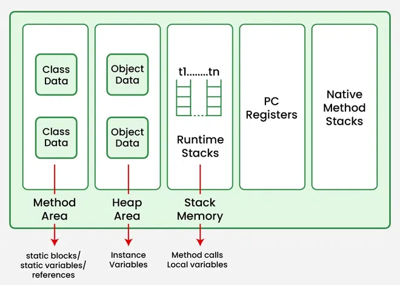

JVM Architecture Explained (For Beginners)

JVM stands for Java Virtual Machine. It is a part of Java that runs your Java programs. Let's break down how it works in a simple way.
How Java Code Runs
- You write Java code (.java files).
- The Java compiler turns your code into bytecode (.class files).
- The JVM reads and runs this bytecode on your computer.
Main Parts of the JVM
- Class Loader: Loads your .class files (bytecode) into the JVM.
- Method Area: Stores information about your classes (like variables and methods).
- Heap: Where all the objects (like
new MyClass()) are stored.
- Stack: Keeps track of method calls and local variables for each thread.
- Execution Engine: Actually runs the bytecode instructions. Includes the JIT (Just-In-Time) compiler, which makes your code run faster by converting bytecode into native machine code while the program runs.
- Native Method Interface: Lets Java code use code written in other languages like C or C++.
- Native Method Libraries: The actual code from other languages that Java can use.
What is the JIT Compiler?
The JIT (Just-In-Time) compiler is a key part of the JVM's Execution Engine. Its job is to make your Java programs run faster. Instead of interpreting bytecode line by line, the JIT compiler translates frequently used bytecode sections into native machine code while the program is running. This means the code can run directly on your computer's processor, making it much faster after the first few runs.
- Why use JIT? It improves performance by turning bytecode into optimized machine code at runtime.
- How does it work? When the JVM notices that some code is used a lot, the JIT compiler converts it to machine code and stores it. Next time, the JVM runs the machine code directly instead of interpreting the bytecode.
Simple Diagram
+---------------------+
| Java Source Code |
+---------------------+
|
v
+---------------------+
| Java Compiler |
+---------------------+
|
v
+---------------------+
| Bytecode (.class) |
+---------------------+
|
v
+---------------------+
| JVM |
| +---------------+ |
| | Class Loader | |
| +---------------+ |
| | Method Area | |
| | Heap | |
| | Stack | |
| | Execution Eng. | |
| | +---------+ | |
| | | JIT | | |
| | +---------+ | |
| | Native Intf. | |
| | Native Libs | |
+---------------------+
Summary
The JVM makes Java programs run on any computer, by converting bytecode into instructions your computer understands. It manages memory, runs your code, and keeps everything safe and organized.